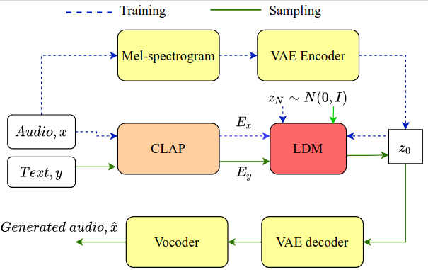
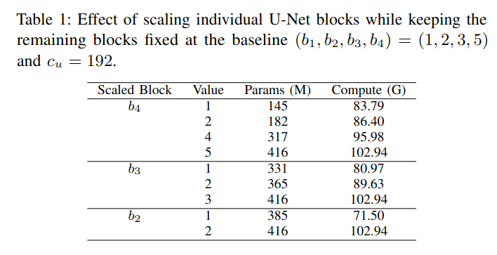
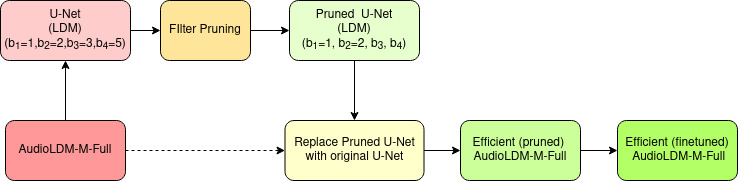
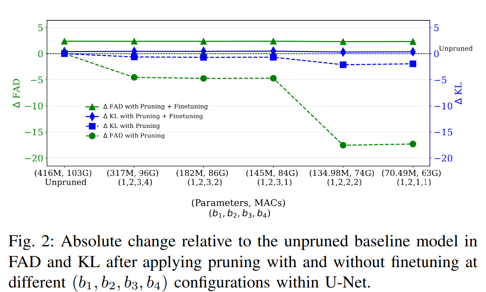
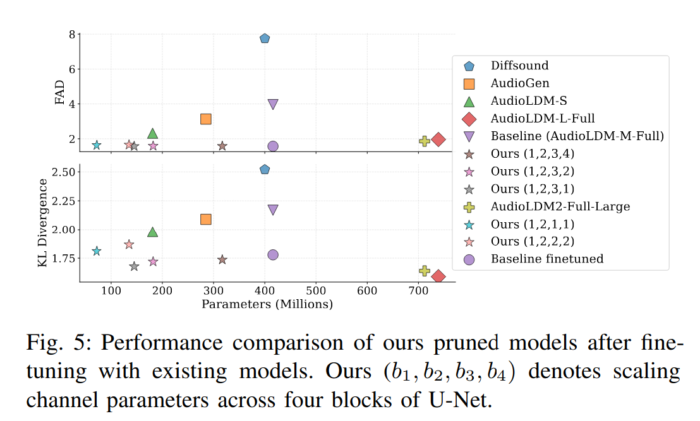
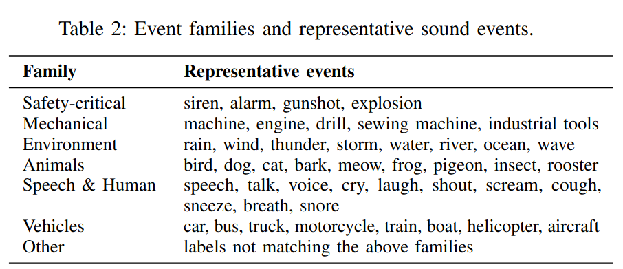
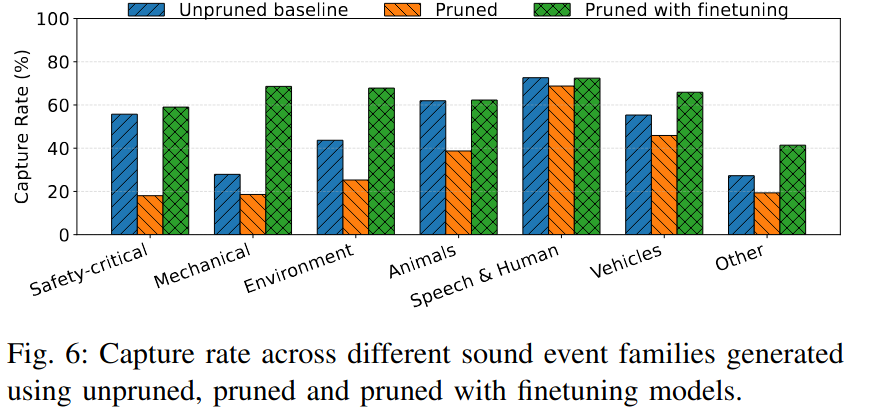

Diffusion-based text-to-audio generative models such as AudioLDM achieve high perceptual quality and strong semantic consistency; however, their practical deployment is hindered by the substantial computational cost of the U-Net denoising backbone. In this work, we investigate model pruning as an effective approach to improve the inference efficiency of AudioLDM, a U-Net based text-conditioned audio latent diffusion model. We analyse parameter redundancy across U-Net convolutional blocks and evaluate a filter-pruning strategy. Pruning is guided by norm-based criteria and followed by lightweight finetuning to mitigate performance degradation. Experimental results demonstrate that up to 83\% of the parameters and 39\% of the multiply–accumulate (MAC) operations of U-Net can be removed while maintaining, and in some cases improving, generation quality compared to the baseline unpruned network. We find that pruning affects AudioLDM’s ability to generate certain sound events including safety-critical sounds such as gunshots, sirens, and explosions, as well as mechanical sounds such as drills and sewing machines, and other sounds such as sprays and tick-tocks, which are mostly recovered by lightweight finetuning of the pruned network. The code is available at GitHub Link.







| Text input | Unpruned | Unpruned with FT | Pruned | Pruned with FT |
|---|---|---|---|---|
| A man speaks and then whistles | ||||
| You don't have to be sorry for my loss. You can find me a flight to Houston by typing into your computer there. | Convert the source speech to a calm, slow-paced style. | |||
| Gotcha, okay. I can't believe I didn't get that the first time. I thought it was a literal pot of gold. | Convert the source speech to a animated, happy tone with a measured pace. | |||
| I'm so grateful. I know that you have other friends that you could have chosen to bring with you, but... | Convert the source speech to a booming, crisp, animated, angry tone with a shrill, loud volume. | |||
| And so you get combinations of primary colors as the air pressure, as you get higher, the air pressure gets lower. | Convert the source speech to a flowing, sing-song, slow, confused style. |